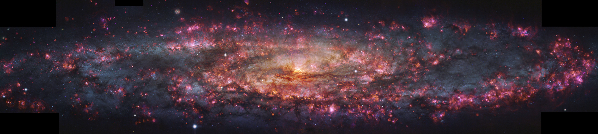

Extragalactic radio phoenices. The Treble Clef phoenix discovered 7 Jul 2026.
Mapping the Local Universe Large-Scale structure
General discussion of stellar multiplicity in the Milky Way
Peculiar observations of the "wet" moon in March 2026 and their explanations
The Mouse pulsar and its tail!